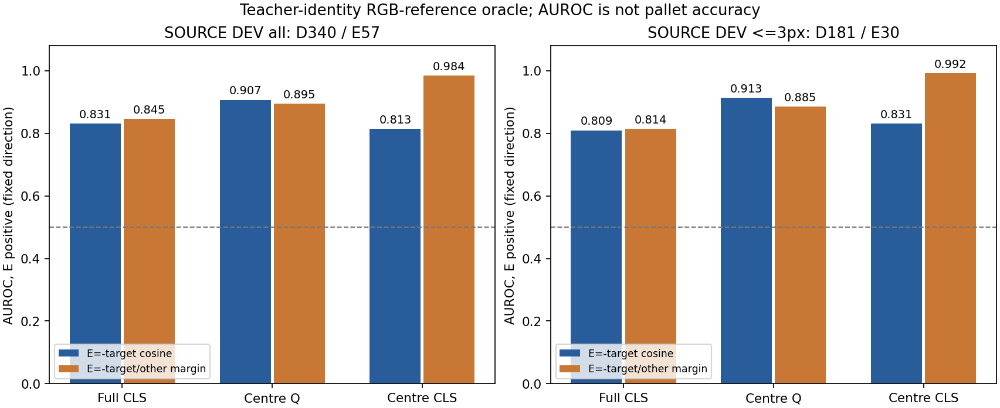
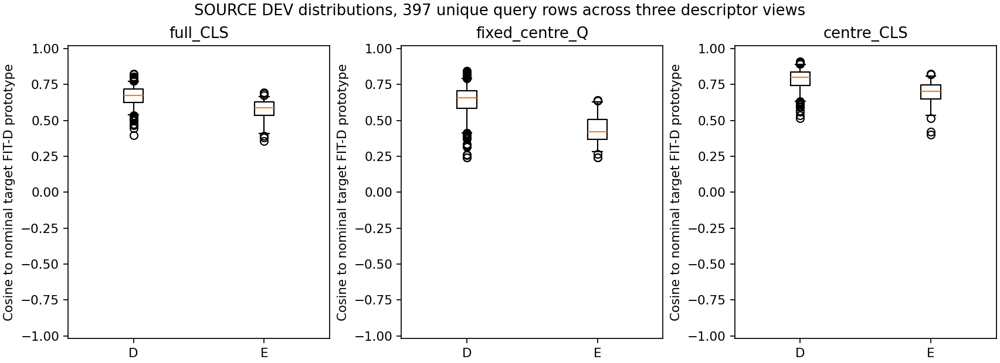
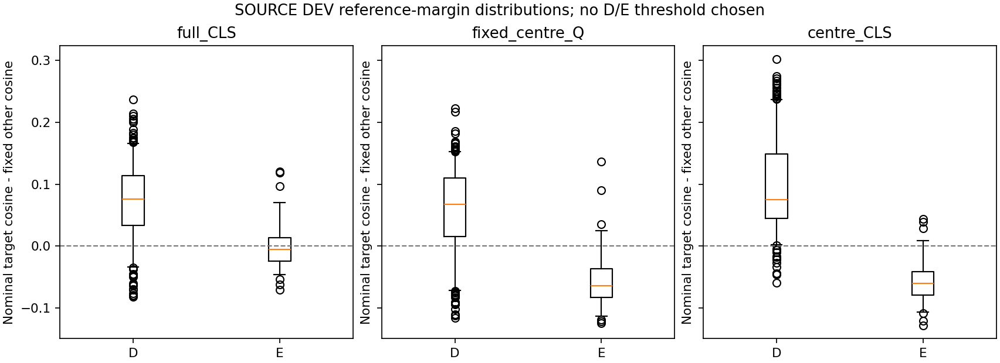

SOURCE FIT 보임 841개로 참조를 계산하고 DEV397개를 평가했습니다. 새 학습 update·문턱 선택·현재 평가·PnP는 없습니다.
| 특징 | 오차 범위 | D / E | −참조 cosine AUROC | −참조 차이 AUROC |
|---|---|---|---|---|
| full_CLS | all | 340 / 57 | 0.8306 | 0.8455 |
| fixed_centre_Q | all | 340 / 57 | 0.9066 | 0.8951 |
| centre_CLS | all | 340 / 57 | 0.8134 | 0.9837 |
| full_CLS | <=3px | 181 / 30 | 0.8094 | 0.8144 |
| fixed_centre_Q | <=3px | 181 / 30 | 0.9129 | 0.8855 |
| centre_CLS | <=3px | 181 / 30 | 0.8308 | 0.9919 |



사후 저장 점수 비교: V248 기존 head AUROC는 전체 약0.53, 3px 이하는 약0.49였습니다. E57개 중53개가 한 물체에 몰려 있어 범위를 제한해 해석합니다.
전체 해석·한계·코드·지원 표 · 표 CSVAUROC는 정확도가 아닙니다. 세 특징을 모두 보고하며 유리한 특징이나 문턱을 선택하지 않았습니다. SOURCE 파생 정답 메타데이터를 참조 선택에 사용했고, 물리 native 대응·SELF·배포 참조 선택은 미확인입니다.